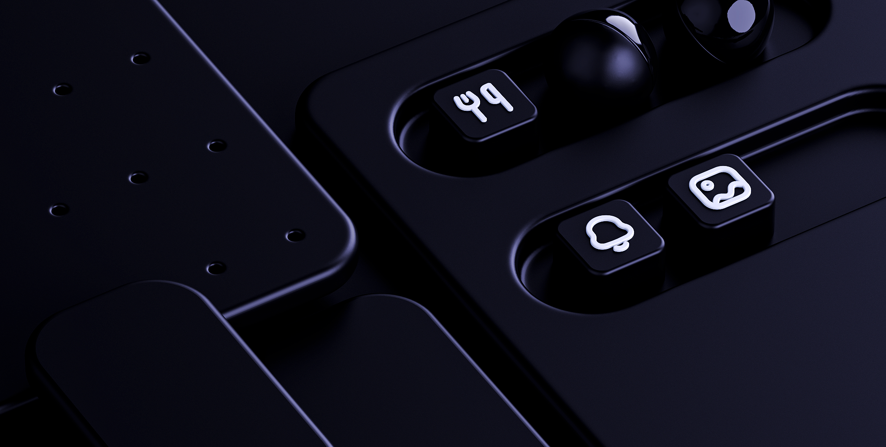

Icons
Guía de estilo de iconografía del Mustache Design System: cómo construir, nombrar y usar los íconos de Rappi de forma consistente.

¿Qué es un ícono?
Los íconos son símbolos visuales que representan objetos, acciones o conceptos de forma inmediata y universal. Son independientes del idioma, ocupan poco espacio y reducen la carga cognitiva del usuario cuando se usan correctamente.
Un ícono efectivo es:
- Reconocible: el usuario entiende su significado de forma inmediata.
- Distinto: no se confunde con otros íconos del sistema.
- Consistente: sigue las mismas reglas de construcción que el resto del set.
- Escalable: funciona correctamente en todos los tamaños definidos.
Principios de diseño
Los íconos son una extensión visual de la marca. Rappi es directa, accesible, dinámica y cercana, y eso se traduce en íconos que:
- Tienen trazos de peso consistente (ni demasiado delgados ni pesados).
- Usan esquinas ligeramente redondeadas (ni puntiagudas ni excesivamente suaves).
- Son figurativos y literales, no abstractos.
- Priorizan la claridad sobre la complejidad.
Anatomía del ícono
Grilla base
Todos los íconos se construyen sobre una grilla de 24×24px, con un área viva de 20×20px y un margen de contenedor de 2px por lado.
Grilla de píxeles
Alinea siempre los elementos a la grilla de píxeles para que las líneas se rendericen nítidas. Las líneas rectas deben quedar exactamente sobre un píxel; las curvas también se construyen sobre la grilla. En Figma, activa Snap to pixel grid.
Grilla óptica
Los objetos circulares se perciben más pequeños que los rectangulares aunque midan lo mismo. Para compensarlo:
- Cuadrado / rectángulo → llega al borde del área viva.
- Círculo → se extiende ligeramente más allá para equilibrar el peso visual.
- Formas diagonales o irregulares → el objeto dominante se centra óptica y geométricamente.
Bounding box
El cuadro completo de 24×24px se usa solo cuando el ícono incluye elementos extra (badges, alertas, indicadores). Para íconos simples, el elemento principal vive dentro del área viva de 20×20px.
Estilos
Rappi tiene dos estilos de íconos; la elección depende del contexto y la necesidad de comunicación.
Usa líneas para definir la forma. Es el estilo principal: más detalle y precisión, percepción ligera y moderna, para la mayoría de contextos.
Usa formas sólidas. Para estados activo/seleccionado (ej. un tab activo), contextos de alta densidad o cuando la reconocibilidad inmediata es prioritaria.
Regla de consistencia: nunca mezcles outline y filled en el mismo conjunto o componente, a menos que sea intencional para comunicar un estado diferente.
Construcción
Color
Los íconos de producto usan un solo color: negro (o el color de texto del sistema), para que sean fáciles de reutilizar y adaptar.
- Íconos de producto: 1 color.
- Íconos de marketing: máximo 2 colores si es esencial para la marca.
- 3 o más colores = ilustración, no ícono.
Los diseñadores ajustan el color en sus archivos individuales, nunca en el archivo maestro.
Tamaño y escala
| Tamaño | Uso recomendado |
|---|---|
| 16px | Alta densidad: tablas, listas compactas, inputs. |
| 24px | Uso general en la interfaz (tamaño base). |
| 32px | Mayor jerarquía: empty states, onboarding, encabezados. |
Diseña primero en el tamaño más grande y reduce: es más fácil simplificar que añadir detalle. Para marketing (80px+), considera añadir detalle que a 24px no sería visible.
Trazos (strokes)
- Grosor de línea estándar: 2px, igual en todo el set.
- El espacio entre trazos paralelos no debe ser menor que el grosor del trazo (2px mínimo).
- No usar íconos outline en tamaños menores a 10px (se vuelven ilegibles).
Terminaciones y esquinas
Terminaciones: redondeadas en todo el set, de forma consistente. Esquinas: redondeadas según la composición; en formas concéntricas, el radio interior siempre es menor que el exterior.
Formas geométricas
Parte de formas básicas (rectángulos, cuadrados, círculos). Para diagonales, no rotes un rectángulo: dibuja los vértices directamente sobre la grilla de píxeles.
Metáfora y legibilidad
La metáfora es la asociación conceptual que hace entendible el ícono (una casa = inicio, un insecto = error). Al reducir de tamaño, mantén la metáfora, no la forma exacta: conserva los detalles importantes y simplifica en lugar de eliminar.
Boolean operations en Figma
| Operación | Qué hace |
|---|---|
| Union | Combina formas; la ruta exterior es la suma menos los solapamientos. |
| Subtract | Elimina el área de una forma sobre otra (huecos, ventanas). |
| Intersect | Conserva solo el área donde las formas se superponen. |
| Exclude | Conserva solo las áreas que no se superponen. |
Al terminar un ícono, aplica Union para dejarlo como un solo objeto: así otros diseñadores pueden cambiar el color fácilmente.
Nombrado y organización
Nombra los íconos por lo que representan visualmente, no por su función conceptual.
| Correcto | Incorrecto |
|---|---|
stopwatch | speed |
lightbulb | idea |
house | home |
- Nombres en minúsculas, palabras separadas por guión:
chef-hat,credit-card. - Cortos y descriptivos.
Variantes con slash
Usa / para separar el estilo y las variantes del nombre base:
outline/shield · outline/shield-dollar · outline/shield-euro
Jerarquía de organización
└── Categoría (communication, navigation, finance…)
└── Nombre del ícono (email, arrow-right…)
Keywords: usa el campo de descripción del componente en Figma para sinónimos de búsqueda. Ej. lightbulb → "idea, sugerencia, consejo, tip, inspiración".
Categorías del sistema
El set de íconos de Rappi está organizado en las siguientes categorías:
Exportación y formatos
| Formato | Uso |
|---|---|
| SVG | Desarrollo (web y app). Código limpio y escalable. |
| PNG @1x/@2x/@3x | Partners externos, materiales de marketing. |
| JPG | Casos específicos donde no se requiere transparencia. |
Al exportar SVGs desde Figma: el ícono debe ser un solo objeto (aplica Union), sin capas vacías, líneas sobrantes ni elementos fuera del frame de 24×24px.
Gobernanza y colaboración
Quién puede editar
El archivo maestro tiene edición solo para el equipo de Design Systems; el resto tiene acceso de visualización y uso de librería. Así cada ícono se audita antes de entrar, no hay duplicados y los cambios se propagan a todos los usos.
Proceso para agregar un ícono nuevo
- El diseñador solicita el ícono al equipo de Design Systems.
- Se verifica que no exista ya un equivalente (revisar keywords).
- Se diseña siguiendo esta guía.
- Peer review con al menos otro diseñador.
- Se agrega al maestro con nombre y categoría correctos.
- Se comunica la actualización al equipo.
Coordinación con Ingeniería
Antes de iniciar un set nuevo o cambios estructurales, habla con ingeniería: formatos preferidos para el stack, tamaños ya en uso y convenciones de nombres esperadas en los componentes.
Checklist de calidad
Antes de agregar un ícono al sistema, verifica:
- Construido sobre grilla de 24×24px con área viva de 20×20px.
- Alineado a la grilla de píxeles.
- Grosor de trazo de 2px (si es outline).
- Terminaciones redondeadas y consistentes.
- Esquinas redondeadas según la composición.
- Un solo objeto (Boolean Union aplicado).
- Sin capas vacías ni elementos fuera del frame.
- Nombre correcto: describe lo que se ve, no lo que significa.
- Categoría asignada.
- Keywords en la descripción del componente.
- Revisado por un segundo diseñador.